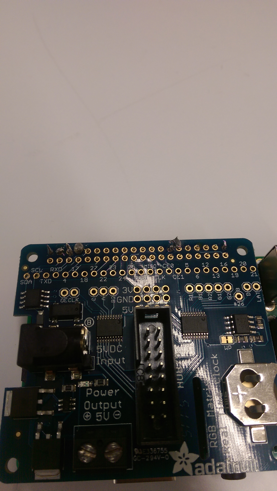

So in your card you asked about the electronic coffee table I was building. Sadly it didn't come as far as I would have liked this summer, with me only completing the LEDs and not actually getting underway with any of the physical construction. I'm planning on finishing it over winter break when I have more time. Here's the only video I took of the LED panels:
And here's a picture of the device that connected the LED panels to the raspberry pi. I had to learn how to solder to get this connected to the pi:
All in all, the LED matrix is made up of six 32x32 squares for a total of 6144 pixels which, hopefully after winter break, will be capable of playing some retro arcade games.